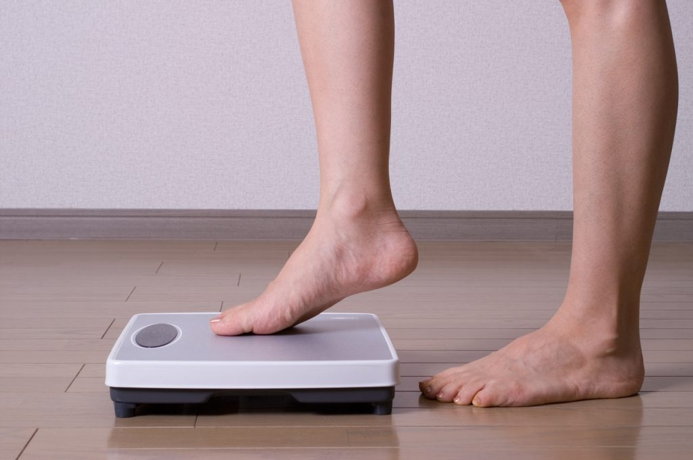

Sobre o nosso programa
Nosso objetivo é ajudar você a alcançar uma vida mais saudável e equilibrada.
Através de orientações nutricionais, acompanhamento motivacional e práticas sustentáveis,
nosso programa de emagrecimento foi pensado para quem busca resultados reais,
sem dietas malucas ou promessas milagrosas. Aqui, você encontra suporte de verdade para transformar hábitos e conquistar
o corpo e o bem-estar que deseja.

Nossa Metodologia
Nosso programa de emagrecimento é baseado em três pilares fundamentais:
educação alimentar, acompanhamento personalizado e mudança de hábitos de forma gradual e sustentável.
Trabalhamos com profissionais capacitados que entendem que cada corpo é único.
Por isso, oferecemos planos ajustados à sua realidade, respeitando seu ritmo e promovendo
resultados duradouros — sem sofrimento e sem fórmulas milagrosas.
Acreditamos que o processo de emagrecer vai além do corpo: é também sobre autoestima,
motivação e qualidade de vida.